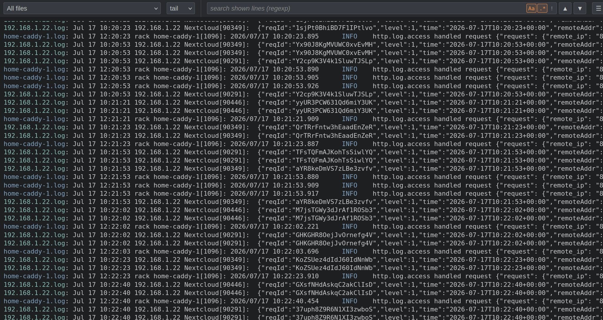

A tiny, dependency-free web viewer that tails and greps your log files — right in the browser.

No database, no agents, no ingestion pipeline — just files. Point it at the logs already on disk (syslog-ng, journald, Docker, app log files) and read them. One auditable static binary, ideal for a home server or a single VPS.
Tailon-ng does no authentication of its own — anyone who can reach its port can read the served files. Bind it to localhost or run it behind an authenticating reverse proxy. It's a log viewer, not a gateway.
Go standard library throughout, plus exactly two pure-Go decompression libraries (xz, zstd) for reading rotated archives. Vanilla HTML/CSS/JS frontend — no frameworks, no npm, no external tail/grep.
About 1,600 lines of code, total. Small enough to read in one sitting and audit before you run it on a server.
Everything — templates, CSS, JS — is embedded. Drop one static binary on a box and run it. Linux & macOS, Intel & ARM.
tail follows a file live (with a regular-expression filter); view reads it whole, with search-as-you-type highlighting and next/prev jumping; find greps server-side — all in-process in Go, with no grep/sed/awk subprocess and nothing that reaches a shell.
The All files view merges many logs in timestamp order (ISO 8601, syslog, Apache, ctime…), so you read events across hosts chronologically.
Rotated archives (.gz, .xz, .zst, .1, date-stamped) never pollute live tailing. Select one to view it decoded, or use find-all to search live logs and every archive at once.
Click a line to highlight it (Ctrl toggles, Shift ranges), then Ctrl-C copies exactly those lines. In merged views, click a line's file prefix to jump into that file's view — scrolled to that very line.
On Linux, appended lines are pushed in milliseconds via inotify (polling fallback elsewhere) and arrive over Server-Sent Events, auto-scrolling while you're at the bottom. Big grep loads show a true 0–100 progress bar and jump to the end when done.
Logs only grow, so the browser caches what it fetched: switching files or modes re-renders instantly and requests only the new bytes. A fully-read archive is never fetched twice.
Grab the latest release binary for your OS/arch (installs to /usr/local/bin, or ~/.local/bin):
curl -sL https://raw.githubusercontent.com/tbocek/tailon-ng/main/install.sh | bash
Or build from source with Go 1.26+:
go install github.com/tbocek/tailon-ng@latest
Point tailon-ng at files, directories, or globs — directories are served recursively:
tailon-ng /var/log/remote/ # a directory, recursively tailon-ng "/var/log/**.log" # a recursive glob (** = any depth) tailon-ng /var/log/nginx/,/var/log/apache/ # several, comma-separated tailon-ng -b :9000 access.log # pick the port
Then open http://localhost:8080, choose a single file, a subfolder, or All files, pick tail, find or view, and type a regexp to filter.
One tailon-ng tab can stand in for ssh-ing into a fleet of machines. A typical deployment:
every service on a self-hosted server logs through the container runtime's syslog driver into a local
collector, while other machines on the network ship their logs to that same collector over TLS. The
collector (syslog-ng, rsyslog, …) writes one file per source into a shared directory; tailon-ng
mounts it read-only and serves it behind a reverse proxy with authentication. Open All files and
every host and container becomes a single, live, timestamp-ordered stream you can grep.
flowchart LR
subgraph remote["other machines"]
direction TB
H1["host"]
H2["host"]
H3["host"]
end
subgraph srv["self-hosted server"]
C["containers"]
S["log collector
(syslog-ng)"]
DIR[("shared dir
one file per source")]
T["tailon-ng
(read-only)"]
P["reverse proxy
HTTPS · auth"]
end
B["browser
tail · grep · All files"]
H1 & H2 & H3 -->|"syslog / TLS"| S
C -->|"syslog"| S
S --> DIR
DIR --> T --> P --> B
classDef accent fill:#ff974f,stroke:#ff974f,color:#1d1f21,font-weight:bold;
class T accent;
/var/log/remote, point tailon-ng at it, and pick All files — every host's log, merged in timestamp order.